Tozawa
Tozawa · Yamagata
Tozawa
Highlighted on the Yamagata map.
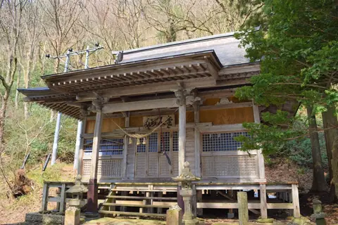
Stay
高見屋 最上川別邸 紅
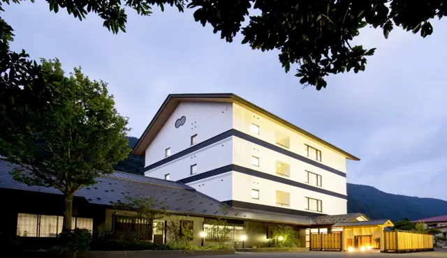
Takamiya Mogamigawa Bettei Kurenai
Ryokan inn in Tozawa, Yamagata.
Ｒ；ＭＯＧＡＭＩ
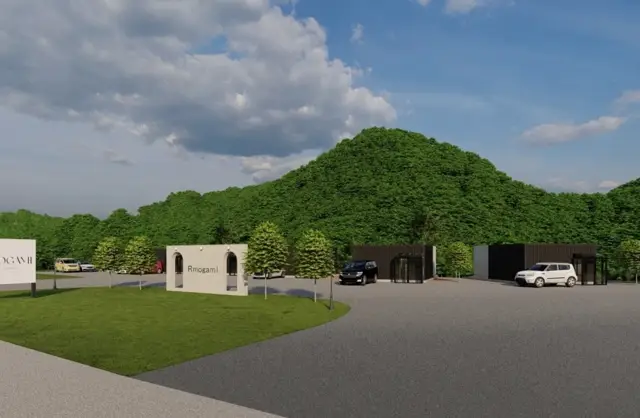
R;MOGAMI
Holiday lodging in Tozawa, Yamagata.
Dining
中華そば 雲ノ糸 最上川店
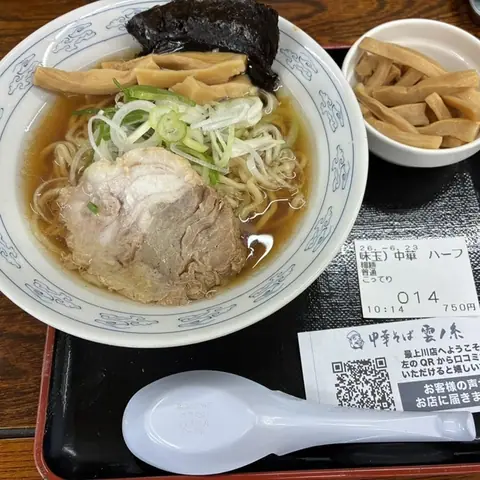
Chuuka Soba Kumo No Ito Saijou Kawa Mise
Ramen shop in Tozawa, Yamagata.
戸沢のぼたもち
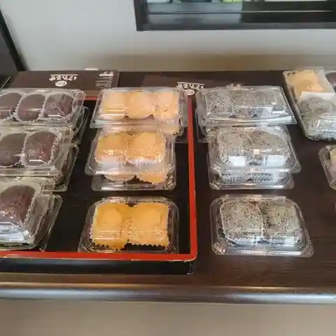
Tozawa Nobotamochi
Japanese sweets shop in Tozawa, Yamagata.
日韓ひろば
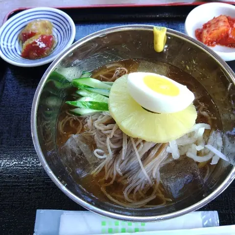
Nikkan Hiroba
Korean restaurant in Tozawa, Yamagata.
高麗館
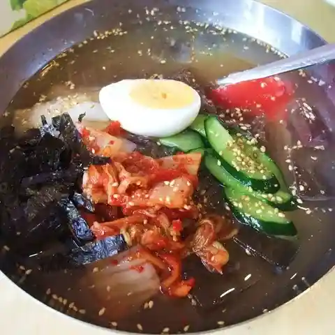
Kourai Kan
Roadside-station eatery in Tozawa, Yamagata.
佐藤長三郎そば
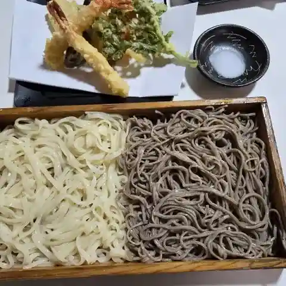
Satou Chousaburou Soba
Soba restaurant in Tozawa, Yamagata.
パーラー白糸の滝
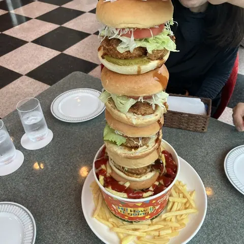
Paaraa Shiroito No Taki
Coffee shop in Tozawa, Yamagata.
高見屋 最上川別邸 紅
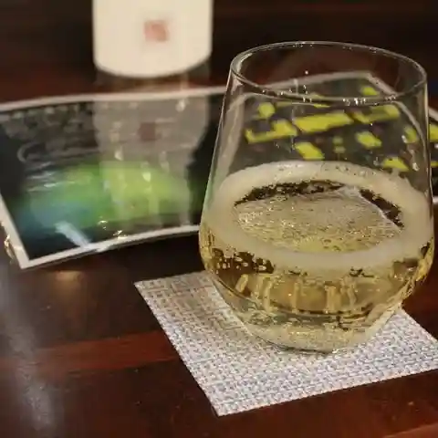
Takami Ya Saijou Kawa Bettei Kurenai
Hotel restaurant in Tozawa, Yamagata.
戸城
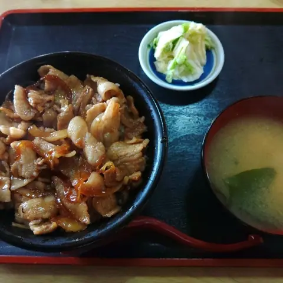
Ko Shiro
Shokudo diner in Tozawa, Yamagata.
八郎兵衛茶屋
Hachiroubee Chaya
Soba restaurant in Tozawa, Yamagata.
戸沢藩船番所
Tozawa Hansen Bansho
Japanese sweets café in Tozawa, Yamagata.
芭蕉ドライブイン
Bashou Doraibuin
Shokudo diner in Tozawa, Yamagata.
芭蕉庵
Bashou Iori
Soba restaurant in Tozawa, Yamagata.
めん処
Men Tokoro
Standing soba counter in Tozawa, Yamagata.
ニューヤマザキデイリーストア 山形白糸の滝店
Nyuuyamazakideiriisutoa Yamagata Shiroito No Taki Mise
Convenience store in Tozawa, Yamagata.
うめちゃんキムチ 道の駅とざわ高麗館店
Umechan Kimuchi Michi No Eki Tozawa Kourai Kan Mise
Korean restaurant in Tozawa, Yamagata.
いきいきランドぽんぽ館
Ikiiki Rando Ponpo Kan
Shokudo diner in Tozawa, Yamagata.
お食事処 山科
O Shokuji Tokoro Yamashina
Soba restaurant in Tozawa, Yamagata.
三左衛門そば
Sanzaemon Soba
Soba restaurant in Tozawa, Yamagata.
レストラン colina
Resutoran Colina
Korean restaurant in Tozawa, Yamagata.
戸沢村こぶし会
Tozawa Mura Kobushi Kai
Sweets shop in Tozawa, Yamagata.
Sights
Mogami River Basyo Line Descent
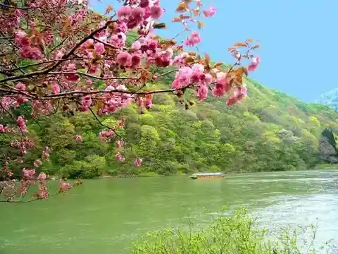
Go down the magnificent Mogami River while listening to the barcarolle of the boatman and the famous stories.
Mogami River
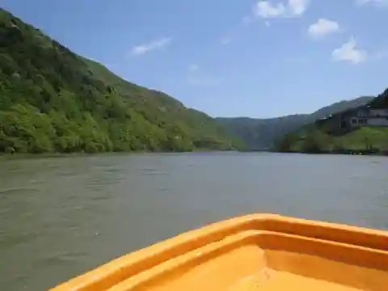
Enjoy year-round scenic beauty on a cruise along this famous river!
Michi-no-Eki Tozawa
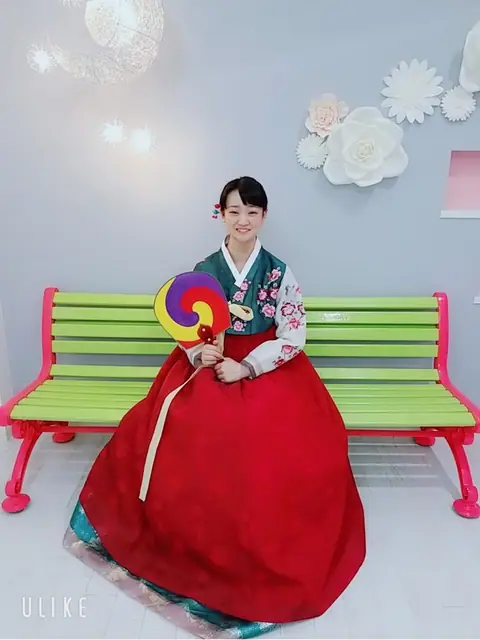
A hilltop roadside station in Tozawa, known for Mogami River boat trips, with views over the river and farmland. Its Korean-style buildings house a shop selling Korean food and cosmetics and a restaurant serving bibimbap and cold noodles.
Sennindo - Sotokawa Shrine
Mogami River Boat Tours Yoshitsune Roman Tourist
Mogami River Boat Tours Yoshitsune Roman Tourist
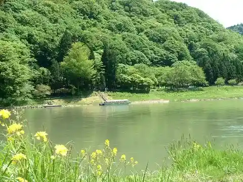
Mogami River Boat Tours Yoshitsune Roman Tourist